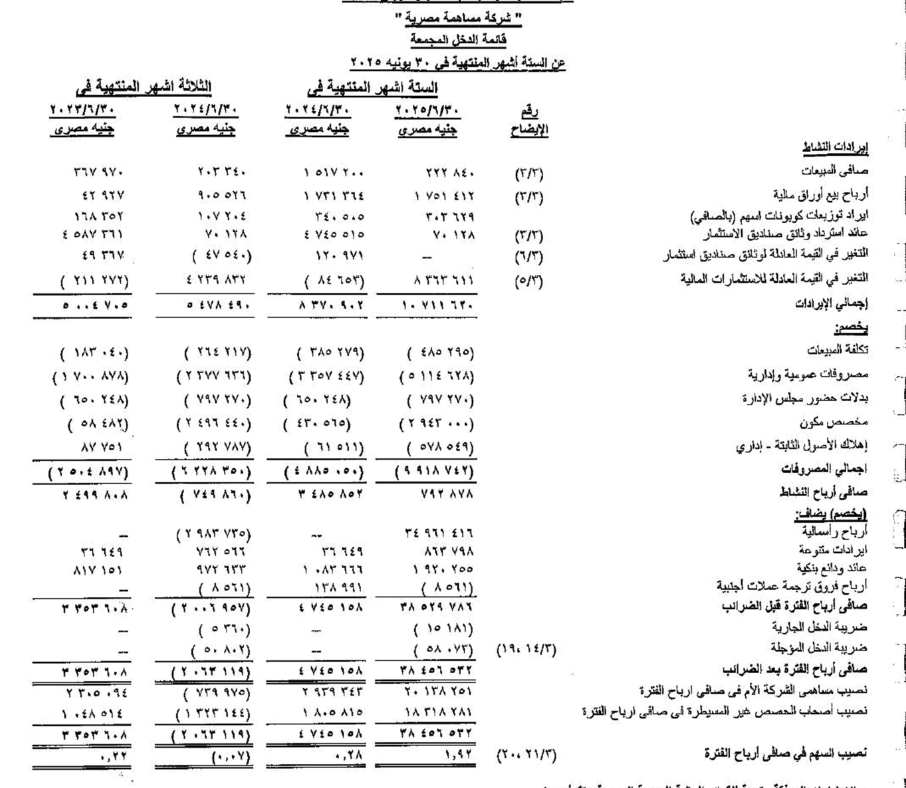
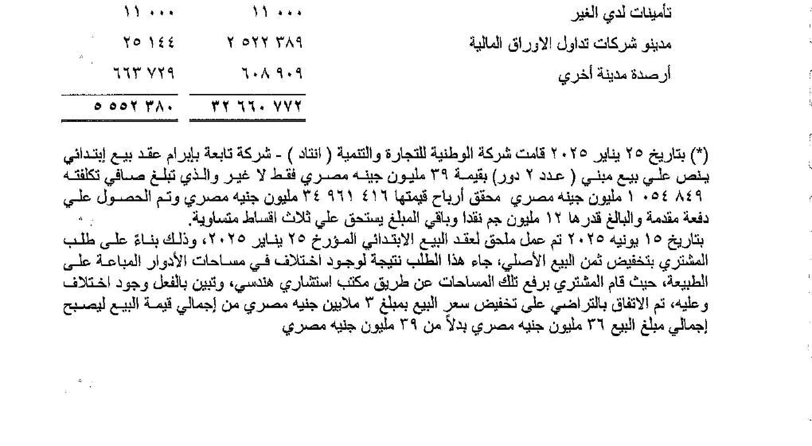
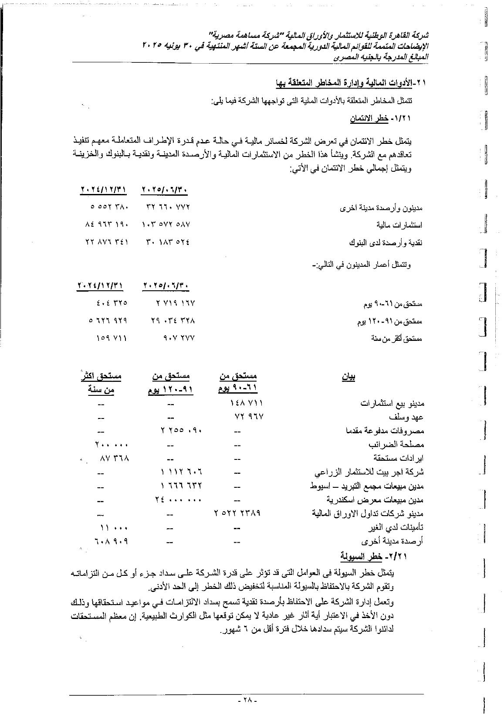
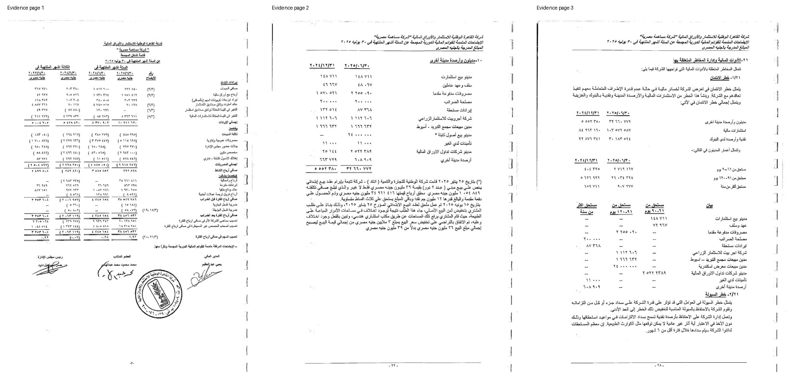

10.5m shares × EGP 99.49, using the 22 July 2026 screenshot price. This is a quoted market capitalization, not cash held by the company.
Market price date: 22 Jul 2026
← Back to The Barbarian Project
The company
Featured investigation
Research cutoff · 25 July 2026
FILE 01 / KWIN–ENTAD–ASSIUT
The company
that owned part of its owner.
A public-record reconstruction of a circular ownership loop, a “cash” takeover that left a large bidder receivable, an abandoned take-private, a two-floor property gain, and nearly EGP 80 million of parent shares released into abnormal market liquidity.
00 / Executive read
The story in
four numbers.
The numbers are real. Their dates and accounting meaning matter just as much as their size.
At 30 June 2025, consolidated total equity was EGP 119.74m, of which EGP 28.36m belonged to non-controlling interests.
Balance-sheet date: 30 Jun 2025Final sale price EGP 36m less EGP 1.055m net book cost. The book cost was not the purchase price or a current appraisal.
Pre-tax gain · recognized in H1 2025
ENTAD’s 2025–2026 KWIN releases
945,911 shares
About EGP 79.93m of estimated gross consideration at a weighted average near EGP 84.50. The quantity equaled roughly 90% of the public float estimated before the sell-down.
Gross proceeds are not the same as accounting profit.01 / The entire file on one page
Every entity.
Every flow.
Six companies, one family consortium and one bank. Solid lines are ownership and confirmed cash. The amber dashed line is the route the public record does not establish.
- Ownership & control
- The circular loop and the shares released from it
- Confirmed cash consideration
- Balance owed — repayment route not established
ADIB + ENTAD held 89.99619% of KWIN.
9,449,600 of 10.5m shares — 400 shares below the 90% level at which a minority shareholder may petition FRA under Article 357. Notable precision; not proof of intent.
The amber line is the whole case.
KWIN's audited accounts confirm the debt and confirm it nearly vanished in 2023. What they do not show is where the money came from. Bank ledgers and the 26 January 2021 agreements decide it.
A diagram is not an allegation.
Circular ownership, seller credit, a block below 90% and a sale below 5% are each lawful on their own. The map shows why the combination deserves the documents, not that a rule was broken.
02 / What was the market paying for?
A billion-pound quote.
A much smaller book.
KWIN is an investment company, so assets, liabilities, subsidiary ownership, treasury shares, and minority interests are central to the valuation story.
Consolidated assets
230.515m
−
Consolidated liabilities
110.775m
=
Total equity
119.740m
Total equity
119.740m
−
Non-controlling interests
28.358m
=
KWIN owners’ equity
91.382m
What one share price is actually valuing
All three bars measure KWIN. They differ only in whether subsidiary-held parent shares are removed, and whether the answer comes from the screen or from the book.
- Market-based measures
- Book-based measure (estimate)
At the midpoint, the quoted capitalisation is about 7.69× the estimated look-through NAV, and the circle-adjusted value about 6.44×. The NAV figure is an estimate built from 30 June 2025 audited equity plus the parent's 51.22% claim on ENTAD's share-sale cash — it excludes Q2 2026 results, tax and settlement costs, and any property revaluation.
The ownership circle changes the denominator.
ENTAD still held 1,705,078 KWIN shares after the July 2026 sale. Removing subsidiary-held parent shares leaves about 8.795m externally/economically outstanding shares and an adjusted quoted value near EGP 875.01m at EGP 99.49.
High quoted value is not proof of manipulation.
A very small float can reprice an entire company through a limited number of trades. That can make the screen valuation fragile or speculative, but order-level and beneficial-owner evidence is required to prove market manipulation.
03 / The economic map
The ownership
loop.
From 30 April 2023, KWIN controlled ENTAD while ENTAD remained a major shareholder in KWIN. ADIB sat above both.
How close the group stopped to 90%
At its peak the related block held 9,449,600 shares. The bar is the whole company; the marker is the level at which a qualifying minority shareholder may petition FRA for a buy-out offer under Article 357.
90% · Article 357
- ADIB Egypt · 64.75% — 6,798,611 shares
- ENTAD · 25.25% — 2,650,989 shares
- Public float · 10.004%
Combined, ADIB and ENTAD held 89.99619% — short of 90% by 400 shares, roughly four ten-thousandths of one per cent. ADIB's own December 2023 takeover disclosure gave a slightly different 89.992%, a 440-share discrepancy that may be timing, rounding or an inconsistency. The proximity is meaningful context; it is not evidence that the threshold was deliberately managed.
And who owns the other side of the loop
KWIN's 51.22% and ADIB's 40% leave roughly 8.79% of ENTAD unaccounted for in most write-ups. The registered capital table names it.
- KWIN · 51.22% — 2,402,663 shares
- ADIB Egypt · 39.99% — 1,875,631 shares
- Servico (سيرفيكو) · 7.39% — 346,862 shares
- Individual shareholders · 1.40% — 65,678 shares
The residual is Servico — Youth for Investment & General Services (شركة الشباب للاستثمار والخدمات العامة) — plus a small retail tail. Servico is the same counterparty that sold KWIN its first 762,646 ENTAD shares in 2015 at EGP 13.57; it kept 346,862. It is also inside the loop: ENTAD's own 2019 investment note carried 604,025 Servico shares, written down to nil — so ENTAD and Servico hold each other too.
Source, read directly: the table is on page 11 of the fair-value report on ENTAD's share prepared by Moore Stephens Egypt for Financial Services, an independent financial advisor licensed by the FRA (no. 1733), commissioned by Alexandria for Investment & Securities and built on ENTAD's audited 31 December 2019 accounts. The document is filed on the EGX site as bulletin attachment 244058_3. The same report records that ENTAD "does not currently carry out any activities and generated no revenue from operations" — the dormant holding vehicle the rest of this file describes.
How firm is this? The table sums exactly to 4,690,831 shares and rolls forward to 51.2204% for KWIN and 39.985% for ADIB — matching two independently established figures to four decimals, with the residual closing to within 3 shares. ADIB's 40.00% is separately confirmed current at 31 December 2025 and unchanged for a decade, and ADIB's consolidated accounts report its direct-and-indirect ENTAD interest as 73.16%, which is exactly 40.00% + (64.75% × 51.22%) — arithmetic that leaves no room for any other ADIB group company to hold ENTAD shares. The residual sits outside ADIB's perimeter.
As-of caveat: the Servico and individual lines are the registered capital structure as it stood for the 2020 report. No later filing updating those two lines was located, so the residual is either still Servico plus individuals or has since passed to an undisclosed third party. It cannot have gone to KWIN or ADIB, whose stakes are fully accounted for. The report's own percentages are loosely rounded (and it prints 1.50% where the share count gives 1.40%); the share counts are exact.
ENTAD’s KWIN shares became group treasury shares.
KWIN’s consolidated accounts deducted the position as treasury shares. IAS 32 normally treats later sale proceeds as cash and an equity movement—not operating profit from the group “selling itself.”
The public filings show two different treatments.
The shares remained visible as an ENTAD shareholder position and appear in meeting arithmetic, while the consolidated accounts treated them as treasury shares. The FRA/EGX interpretation linking those treatments was not located.
A private holding and transaction vehicle.
ENTAD held group-company stakes, controlled a real-estate subsidiary, bought and sold KWIN and Assiut-related blocks, and later became KWIN’s controlled subsidiary. None of those functions is inherently illegal.
04 / Master chronology
Twelve years
in one line.
The loop was not hidden or created overnight. It was assembled, reorganized, nearly taken private, and then partially unwound.
-
Confirmed
The circular structure begins openly.
FRA approved KWIN’s ENTAD offer. KWIN bought 762,646 ENTAD shares for EGP 10.348m while public reports already described ENTAD as holding about 18.18% of KWIN.
-
Confirmed
KWIN authorizes a wider group consolidation.
Shareholders approved ENTAD and Assiut Agricultural blocks with interested sellers excluded from voting. Some transactions did not execute until 2023.
-
FRA approved
The Assiut Islamic cash MTO executes.
An 11-person consortium acquired 4,888,339 shares at EGP 28.50, total EGP 139.318m. ADIB, KWIN, and ENTAD supplied 91.14% of accepted shares.
-
Unresolved
Most of KWIN’s sale price remains a bidder receivable.
KWIN’s audited accounts showed EGP 34.692m still due from Amr Abu El‑Eyoun—77.96% of KWIN’s EGP 44.500m seller block.
-
Compliance event
Assiut’s post-delisting capital reduction stalls.
EGX moved AITG to the ownership-transfer system because the company had not obtained EGX’s no-objection for a capital reduction.
-
Confirmed
AITG sells three residual group stakes back into the network.
AITG received EGP 36.127m. KWIN simultaneously reached 51.22% of ENTAD; ENTAD reached 25.25% of KWIN; KWIN reached about 89.46% of Assiut Agricultural.
-
Regulator objection
FRA objects to a blanket related-party authorization.
The objection cited Listing Rule 39 and Companies Law Executive Regulation Article 217. No completed contract under the authorization was proved.
-
Confirmed
ADIB decides not to submit the KWIN take-private.
The preliminary EGP 10.50 proposal was never filed or executed. The later EGP 99.49 screenshot price was 9.48× that preliminary number.
-
Audited note
ENTAD’s property subsidiary sells two floors.
Preliminary EGP 39m became EGP 36m after an area discrepancy. Net book cost was EGP 1.055m; EGP 24m remained receivable at 30 June.
-
Counterparties unknown
ENTAD releases 945,911 KWIN shares.
Five sale episodes produced about EGP 79.93m of gross consideration. Every identified sale occurred during abnormal volume.
-
Compliance finding
FRA records a profit-distribution noncompliance.
The certified AGM minute expressly cited Companies Law Article 41 and Executive Regulation Article 196.
-
No issuer catalyst
KWIN trades at EGP 99.49 after a no-news run.
KWIN said it knew no reason for the July price movement. The chart was extraordinary; the public record still lacked a matching growth catalyst.
The ninefold move happened in separate bursts
Each row is one documented episode and the prices inside it. The gaps between rows are real months of trading that the located record does not reconstruct, so the rows are deliberately not joined into a single line.
- Before the announcementto 14 Dec 2023 · thin float, stale price EGP 10.26
- Take-private speculation14 → 20 Dec 2023 · four traded sessions EGP 17.51 +70.7%
- The offer is abandonedto 29 Feb 2024 · never filed with FRA EGP 20.78
- A no-news spikeSep 2024 · company reported no material event EGP 48.19 intraday high
- ENTAD's first sale15–16 Sep 2025 · 32× median volume close 84.71 → high 109.00
- The July run16 → 22 Jul 2026 · issuer denied a catalyst EGP 80.80 → 99.49
EGP 0EGP 55EGP 110
Filled dots are official closes; open dots are the other end of the episode, including intraday highs. Two reference levels sit almost on top of each other at the far left: ADIB's proposed take-private price of EGP 10.50 and its own Q1 2024 fair-value study at EGP 10.93. From the EGP 10.26 pre-announcement benchmark, EGP 99.49 is 9.70×. The first doubling had a disclosed catalyst; the located record contains no comparable operating catalyst for the rest.
05 / Where the 2025 profit came from
Two floors.
Most of the headline.
The striking part is the accounting gap and incomplete collection—not evidence of money laundering or an unfair price.
Final sale priceEGP 36.000m
−
Depreciated net book costEGP 1.055m
=
Calculated accounting gainEGP 34.945m
What the statements actually say
- 25 Jan 2025
Preliminary contract for EGP 39m.
- 2 Jun 2025
Engineering measurement found an area discrepancy; final price fell to EGP 36m.
- 30 Jun 2025
EGP 12m had been collected; EGP 24m remained in debtors from sale of fixed assets.
- FY 2025
KWIN reported EGP 42.361m consolidated net profit including non-controlling interests.
The EGP 34.945m pre-tax gain is 82.49% of the EGP 42.361m net-profit headline as a simple magnitude comparison. It is not a clean recurring-profit bridge because the two figures sit on different tax and attribution bases.
One property sale, then everything else
The lower bar is not a second measure — it is the violet segment above it, broken down again by who economically owns it. KWIN held only 51.22% of ENTAD, the company that booked the gain.
- Two-floor property gain · EGP 34.945m (82.49%)
- All other group profit · EGP 7.416m
- …of which KWIN owners' economic share · ≈EGP 17.899m
Both percentages are simple magnitude comparisons, not tax-adjusted attributions. Roughly EGP 17.046m of the gain belonged to ENTAD's outside shareholders, so under half of KWIN's headline profit was economically the parent's. Estimated recurring owner profit, once the property gain is removed, is only about EGP 3.80–7.42m — which is why the 571% headline growth should not be capitalised as a growth rate.
Known
Price, book cost, amendment date, down payment, debtor balance.
Not disclosed publicly
Buyer, beneficial owner, address, square metres, appraisal, broker.
Not proved
Related party, mispricing, laundering, default, or improper recognition.
06 / ENTAD monetizes the parent stake
Five sales.
Abnormal volume.
These are gross cash proceeds, not consolidated operating profit. Public filings do not identify the ultimate beneficial buyers.
Shares released945,9119.0087% of KWIN
Estimated proceedsEGP 79.93mOne small line uses a VWAP proxy
Weighted priceEGP 84.50≈8.05× the EGP 10.50 proposal
A round trip, not an exit
ENTAD bought one large block in March 2023, held it through the price run, then released it across five sessions — ending almost exactly where it began.
Net of everything, ENTAD's stake fell by only 0.17 of a percentage point across three and a half years — but the shares released on the way down realised roughly EGP 79.93m, against the EGP 11.87m the March 2023 block cost. Shares are fungible, so the public record cannot prove which accounting lots were sold; this is a benchmark, not a verified realised profit.
| Date | Shares | Price basis | Gross consideration | Volume vs prior median |
|---|---|---|---|---|
| 16 Sep 2025 | 99,000 | EGP 94.8969 implied | EGP 9.395m | 32.25× |
| 29 Dec 2025 | 5,323 | EGP 79.1472 VWAP proxy | ≈EGP 0.421m | 4.20× |
| 8 Jan 2026 | 41,588 | EGP 81.01 disclosed | EGP 3.369m | 6.74× |
| 17 Jun 2026 | 500,000 | EGP 84.74 disclosed | EGP 42.370m | 46.43× |
| 16 Jul 2026 | 300,000 | EGP 81.24 disclosed | EGP 24.372m | 13.79× |
The shares went to a crowd, not a buyer
No new holder at or above 5% ever appeared. But the official ownership forms record something the Article 29 filings cannot: the number of people holding KWIN's free float roughly tripled across the same window ENTAD was selling.
In the June 2026 quarter alone the register gained 370 free-float holders while the locked block fell by exactly 485,000 shares — precisely 97% of ENTAD's 500,000-share sale, the portion the retention rules count as restricted. Between March 2025 and June 2026 the free-float holder count went from 491 to 1,459.
This is the strongest public evidence yet on the counterparty question, and it points away from a single accumulator: the 30 June 2026 form lists only two holders at or above 5% — ADIB at 64.75% and ENTAD at 19.09% — with the treasury-share line blank. It does not prove the buyers were unrelated to each other; coordinated accounts each held below 5% would look identical on this form. Only beneficial-owner records can separate those cases.
One further detail the forms make plain: at both 31 December 2024 and 31 March 2025 KWIN's free float stood at 9.99638% — marginally under the 10% level the company had acted in 2020 to reach.
Is the float 16% or 19%? Both — they are different dates and different definitions.
Two figures appear across this report and they are not in conflict:
- 16.725% is the filed Article-30 free float at 30 June 2026, which is before the 16 July sale. The form's method is total shares minus everything held for retention — ADIB's whole 64.75%, 97% of ENTAD's stake, and 380 frozen shares. The remaining 3% of ENTAD's holding counts as float, which is why this runs slightly above a simple outside-the-block count.
- ≈19% is the pool sitting outside the ADIB + ENTAD block after the 16 July sale: 10,500,000 − 6,798,611 − 1,705,078 = 1,996,311 shares, 19.01%.
On the same date the two measures are close but not identical — at 30 June the outside-the-block pool was 16.16% against the filed 16.72%. Applying the form's own method after the July sale would give roughly 19.5%, but no form covering that quarter has been filed yet, so this report uses 19.01% and labels it as the outside-the-block figure.
ENTAD repeatedly used deep liquidity to reduce a concentrated position.
The first four episodes were followed by lower closes over available short windows. July 2026 was the exception: KWIN later rose to EGP 99.49.
The largest block was 4.7619% of KWIN.
That is 25,000 shares below 5%. A zero-position buyer could take it without crossing 5%. The 30 June 2026 ownership form confirms none appeared — only ADIB and ENTAD are listed. The holder count, however, jumped by 370 in the same quarter.
No public manipulation mechanism was found.
Abnormal volume plus well-timed sales are surveillance triggers. They do not prove coordinated orders, wash trades, inside information, undisclosed promotion, or common beneficial ownership.
07 / The Assiut cash-offer anomaly
A cash tender.
A large debtor.
The takeover was formal and FRA-approved. The unresolved question is the financing arrangement that sat behind KWIN’s seller block.
KWIN’s seller block
EGP 44.500m
EGP 9.808m received or cleared
EGP 34.692m still due
Audited balance at 31 Dec 2021
Why could a cash offer leave 77.96% of KWIN’s price outstanding?
Lawful possibilities include a separate seller loan after EGX settlement, a disclosed deferred-payment arrangement, an assignment or set-off, or an accounting presentation in which cash passed through settlement but KWIN retained a claim against Amr Abu El‑Eyoun.
FRA’s surviving approval pages expressly reference major-shareholder agreements dated 26 January 2021 and a bidder undertaking dated 22 February 2021. Their terms are not present in the available public archive.
- Confirmed in filings and audited accounts
- The connection the public record does not make
Testable hypothesis—not a conclusion
The 2023 numerical near-match
AITG sells three legacy stakesEGP 36.127m
same year
Amr receivable reductionEGP 31.328m
DifferenceEGP 4.799m
The timing and scale are compatible with a repayment, assignment, or set-off route. They do not prove that AITG financed its own takeover, distributed the proceeds to the family, or that the transactions lacked corporate benefit. Bank ledgers and agreements decide that question.
08 / Abu El‑Eyoun family block
Six people.
A planned majority.
The published maximum-allocation table shows the intended structure. Because the offer was not completely filled, it does not prove every person received the maximum.
+
=
Family maximum51.9235%EGP 58.577m maximum new subscription
The four 100,000-share sister blocks supplied the majority.
The brothers’ maximum combined stake was about 45.94%. The four identical allocations added 5.984%, mechanically carrying the family above 50%.
His published allocation was EGP 12.977m; KWIN assigned him EGP 44.500m.
That proves Amr’s contractual or financing role was much larger than his stated personal allocation. It does not prove he beneficially owned the whole KWIN seller block.
The family governance ties predated the takeover by decades.
An ITDA Gazette records Nasser, Amr, Heba, Hind, and Soha on the board of the same unidentified Assiut commercial-register entity from 1998. The exact company name requires a certified register extract.
The offer was short by 198,589 shares.
The unavailable post-offer Article 30 filing and MCDR register are needed to determine each bidder’s final shares. “Maximum allocation” must not be presented as the amount every family member actually bought.
09 / Governance audit
The meetings reveal
the contradiction.
Accounting classified ENTAD-held KWIN shares as treasury shares. Official meeting arithmetic appears to count the same block.
Exactly ADIB 6,798,611 + ENTAD 2,650,989 + outside holder 107,595. FRA objected to the blanket related-party authorization.
Confirmed objectionExactly ADIB 6,798,611 + ENTAD 2,650,989. If the legal treasury-share restrictions applied, ENTAD’s block should not have counted for attendance, quorum, or voting.
Prima facie questionFor an ADIB lease, the minutes expressly excluded both ADIB and ENTAD representatives from voting—showing the company could apply interested-party exclusions.
Positive controlThe certified minute cited profit-distribution noncompliance under Companies Law Article 41 and Executive Regulation Article 196.
Compliance finding10 / Legal and accounting matrix
What is confirmed.
What is only a question.
This is research, not legal advice. A rule appearing relevant is not the same as a regulator or court finding a violation.
Confirmed event
Assiut capital reduction
EGX expressly said Assiut had not obtained its no-objection and moved the company to the ownership-transfer system.
Administrative noncompliance established; effect on the takeover not established.Strong question
Mutual ownership
Listing Rule 44-bis generally limits mutual ownership under common actual control to 10% in each direction and restricts increases in older positions.
Need the control analysis, transitional treatment, and any FRA exemption.Strong question
Treasury-share cap and voting
ENTAD held 25.2475% when KWIN obtained control; consolidated accounts treated the position as treasury shares; meeting arithmetic appears to include it.
Need FRA/EGX classification, disposal timetable, attendance sheets, and vote tabulations.Confirmed objection
Related-party authorization
FRA objected to the December 2023 blanket authorization under Rule 39 and Article 217.
No completed unauthorized contract was proved from the public file.Top priority
MTO disclosure and seller financing
The public approval references pre-offer agreements; KWIN later carried 77.96% of its “cash” sale price as a receivable from the lead bidder.
The missing memorandum and agreements decide whether financing and equal seller treatment were fully disclosed.Document gap
2023 unlisted-asset valuations
Material related-party blocks relied publicly on older approvals; one Assiut Agricultural block executed 47.42% above the 2020 approved price.
Fresh valuations or regulator approvals may exist but were not located.Confirmed correction
2023–2024 consolidation restatement
The 2024 accounts corrected the prior comparative after ENTAD’s indirect real-estate subsidiary was not fully consolidated.
A correction is real; intentional misstatement is not established.Red flags only
Market manipulation or insider dealing
Thin float, no-news spikes, abnormal volume, and related-party sales justify surveillance.
No false promotion, coordinated-order, wash-trade, beneficial-owner, or inside-information evidence was found publicly.11 / Primary documents
Read the notes.
Not just the story.
These saved extracts show the profit line, the two-floor note, and the EGP 24m fixed-asset-sale debtor. Open any image at full resolution.

01H1 2025 income statementCapital gains line and consolidated profit
02Two-floor sale noteEGP 39m preliminary · EGP 36m final · EGP 1.055m book cost
03EGP 24m debtorFixed-asset-sale receivable in ageing schedule
04Evidence contact sheetThe key statement extracts in one view12 / What would actually settle this
The missing documents
are specific.
The case does not need more speculation. It needs a short list of contracts, ledgers, and beneficial-owner records.
Priority 01Takeover financing7 documents
- Complete Assiut Islamic MTO information memorandum and annexes.
- Major-shareholder agreements dated 26 January 2021.
- Bidder undertaking dated 22 February 2021.
- KWIN–Amr payment agreement for the EGP 34.692m receivable.
- Broker, custodian, MCDR, and bank settlement statements for KWIN’s 1,561,400 shares.
- Equivalent ADIB and ENTAD seller records to test equal treatment.
- Security, interest, maturity, repayment, and expected-credit-loss documents.
Priority 02The 2023 money route6 documents
- AITG 2021–2023 audited statements and bank ledgers.
- Shareholder-loan accounts, dividends, and capital distributions.
- Payment records for the 16 March, 30 April, and 1 May 2023 transactions.
- Any tripartite set-off, assignment, novation, or clearing agreement.
- Board minutes authorizing AITG’s residual stake sales.
- Amr’s personal repayment trail independent of AITG, if that is the explanation.
Priority 03Cross-holding and voting6 documents
- FRA/EGX interpretation under Rules 44-bis, 51, and 51-bis.
- Any disposal or capital-reduction plan for ENTAD-held KWIN shares.
- AGM attendance sheets, powers of attorney, and MCDR freeze certificates.
- Vote tabulations separating ADIB, ENTAD, and outside holders.
- Explanation for the 53,089-share 2026 meeting reconciliation gap.
- Dividend records for the ENTAD-held KWIN position.
Priority 04Valuation and market conduct7 documents
- Fresh 2023 fair-value studies for ENTAD and Assiut Agricultural blocks.
- Board resolutions and conflict declarations for the April–May 2023 deals.
- ENTAD’s property contract, amendment, buyer identity, appraisal, and collection ledger.
- Broker allocations and beneficial owners for all five ENTAD sale dates.
- Order-by-order audit trails around the abnormal-volume sessions.
- Communications among ENTAD, KWIN, ADIB, brokers, promoters, and counterparties.
- Complete EGX Article 29 registry for September 2025.
13 / The fairness test
The facts that weaken
the most dramatic theory.
A credible investigation must preserve exculpatory evidence as carefully as suspicious patterns.
The Assiut acquisition was an FRA-approved mandatory cash offer—not an undisclosed private transfer.
EGP 28.50 was 27.52% above the EGP 22.35 independent value. The public record does not support “the company was taken cheaply.”
The 11-person consortium and its acting-together structure were disclosed at headline level.
Seller credit, circular ownership, a 4.7619% sale, and a block at 89.996% are not automatically illegal.
ENTAD’s sell-down increased KWIN’s public float, consistent with preserving the listing after the abandoned take-private.
A rational large seller naturally waits for high volume to reduce price impact. Good execution timing is not proof that the seller created the volume.
KWIN’s accounts received an unmodified audit; the later consolidation correction does not by itself prove intentional misstatement.
No public order-level evidence proves a pump-and-dump, wash trading, coordinated accounts, insider dealing, or criminal conduct.
14 / Present conclusion
High-priority governance case.
Insufficient public evidence for fraud.
The strongest unresolved issue is not the 9× chart. It is the gap between a formally approved cash tender and KWIN’s audited EGP 34.69m bidder receivable, now connected to FRA-confirmed pre-offer agreements.
The second issue is the legal treatment and apparent meeting use of ENTAD’s 25.25% parent-company stake after KWIN obtained control. The third is whether the 2023 asset sales and receivable repayment were independent events or one disclosed circular settlement.
The filings reveal an unusually circular and opaque structure. They establish the transactions and numerical coincidences, but the private agreements, bank trail, beneficial-owner records, and post-offer allocation report are still needed to determine what happened economically and whether every rule was followed.
Claims this report does not make
- “They created money from thin air.”
- “AITG financed its own takeover.”
- “The family personally received EGP 36m.”
- “ENTAD illegally voted treasury shares.”
- “The KWIN rise was proved to be a pump-and-dump.”
15 / Source register
The trail is
public.
Primary documents take priority. News links are used to preserve transaction notices or make inaccessible filings easier to reach. The complete 78-source register remains in the raw dossier.
ARules and accounting6 links
- FRA listing and delisting rules—Rules 39, 44-bis, 51, and 51-bis ↗
- Capital Market Law Executive Regulations—MTO and market-conduct rules ↗
- Companies Law 159/1981—Articles 41 and 48 ↗
- Companies Law Executive Regulation—Articles 149, 150, 196, and 217 ↗
- FRA explanation of subsidiary-held treasury shares ↗
- IAS 32—own equity instruments and no profit-or-loss gain ↗
BFinancial statements and ownership9 links
- KWIN 2021 audited standalone statements—AITG sale and Amr receivable ↗
- KWIN 2022 standalone statements—receivable bridge ↗
- KWIN 2023 standalone statements—receivable falls to EGP 159,480 ↗
- KWIN 2024 audited consolidated statements—restatement and treasury shares ↗
- KWIN 30 Sep 2025 statements—99,000-share treasury reduction ↗
- KWIN Article 30 ownership at 30 Jun 2026 ↗
- FY 2025 consolidated profit headline ↗
- FY 2025 revenue, capital gain, and standalone detail ↗
- KWIN official financial-statement repository ↗
CAssiut takeover and delisting8 links
- FRA approval report and disclosed bidder group ↗
- Archived FRA approval PDF—public replay is technically truncated ↗
- KWIN board approval to sell 1,561,400 AITG shares to Amr ↗
- Completed offer—4.888m shares for EGP 139.3m ↗
- Final Assiut delisting report ↗
- EGX ownership-transfer action over missing capital-reduction no-objection ↗
- ADIB Egypt 2021 accounts—Assiut exit and gain ↗
- Offer report and 11-row allocation image ↗
DRestructuring, meetings, and later sales12 links
- ENTAD buys AITG’s 928,287-share KWIN block ↗
- KWIN reaches 51.22% of ENTAD ↗
- KWIN reaches 89.4% of Assiut Agricultural ↗
- 31 Dec 2023 AGM—FRA related-party objection ↗
- 17 Mar 2024 AGM—exact 9,449,600 attendance ↗
- 31 Mar 2026 AGM—FRA profit-distribution finding ↗
- ADIB’s signed decision not to submit the KWIN MTO ↗
- ENTAD sells 41,588 KWIN shares ↗
- ENTAD sells 500,000 KWIN shares ↗
- ENTAD sells 300,000 KWIN shares ↗
- KWIN says it knows no reason for the July 2026 price movement ↗
- KWIN’s December 2025 Listing Committee decision ↗
EFamily and institutional network8 links
- AITG 2016 governance—Amr already a director ↗
- Mostafa Moussa’s ADIB legal leadership and group roles ↗
- Amr’s April 2019 AITG purchase ↗
- Al-Ahram notice establishing family relationships ↗
- ITDA Gazette—1998 Abu El-Eyoun board and signing-authority entries ↗
- ITDA Gazette—2022 family board entries ↗
- Official biography of Amr Abu El-Eyoun ↗
- ADIB CEO on the wider legacy-affiliate restructuring ↗
The investigation remains open.